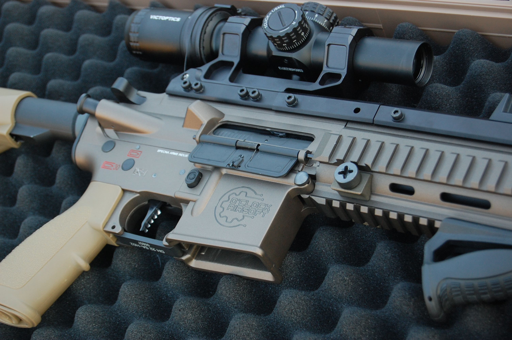

Respuesta inmediata
El sistema reduce sensación de ciclo pesado y transmite antes la energía al disparo.
O’Clock Airsoft · Preparación de respuesta
Una preparación técnica pensada para usuarios que buscan una respuesta más rápida, un ciclo más limpio y una réplica preparada para juego dinámico.

Preparación como sistema
Pack Asalto no se plantea como una simple mejora de velocidad. Está pensado para que el sistema responda de forma más directa sin perder estabilidad, fiabilidad ni control mecánico.
La velocidad solo importa si puedes controlarla.


Pack Asalto
Una configuración orientada a mejorar la respuesta del gatillo, la limpieza del ciclo y la sensación de control en partidas dinámicas. Diseñada para usuarios que necesitan que la réplica reaccione cuando la partida lo exige.
Beneficios técnicos
Textos cortos, foco claro: disparo más inmediato, semi más controlado y ciclo limpio sin forzar la réplica.
El sistema reduce sensación de ciclo pesado y transmite antes la energía al disparo.
Gatillo y ajuste electrónico pensados para disparos limpios y repetibles.
Motor, engranajes y compresión trabajan con menos sensación de arrastre.
Respuesta rápida dentro de una configuración equilibrada, no forzada.
Cada réplica se revisa por tolerancias, desgaste y comportamiento real.
Otras configuraciones disponibles
Respuesta, electrónica y transmisión
La selección se centra en los elementos que cambian la sensación de disparo: gatillo, motor, engranajes, transmisión y conjunto neumático trabajando con ajuste técnico.


Lectura precisa del disparo y ajuste orientado a un semiautomático más directo.
Control inmediato del gatillo.
Entrega eficiente de potencia, menor calentamiento y respuesta estable en uso exigente.
Reacción rápida sin forzar el conjunto.
Relación ajustada a la base para mejorar ciclo, tacto mecánico y fiabilidad.
Ciclo más ágil y controlado.
Cabeza de pistón, cilindro y sellado trabajan para reducir pérdidas y estabilizar el disparo.
Respuesta más constante.
Revisión de tolerancias, alimentación y comportamiento real antes de validar la configuración.
Fiabilidad en partida dinámica.
Diseñado como sistema
La respuesta no depende de una sola pieza. Depende de cómo trabajan motor, engranajes, compresión, alimentación y ajuste electrónico dentro de la misma configuración.
La réplica no tiene que sentirse forzada. Tiene que sentirse afinada.
Checklist técnico
El Pack Asalto se define desde la réplica real: transmisión, compresión, electrónica y estado interno. La respuesta rápida tiene que salir de un conjunto validado.

Base
Plataforma, gearbox y estado interno.
Transmisión
Relación motor / engranajes.
Sistema
Compresión y alimentación.
Control
Electrónica y ajuste de gatillo.
Validación
Prueba final de respuesta y ciclo.
Ficha técnica útil
Usuarios que buscan una réplica más rápida, reactiva y fiable para partidas dinámicas.
Componentes seleccionados según la base de la réplica y el tipo de respuesta buscada.
Respuesta del gatillo, ciclo mecánico, compresión, alimentación, compatibilidad y comportamiento general.
Recomendable instalación técnica para asegurar que el conjunto funcione correctamente.
Depende de la plataforma, gearbox, tolerancias internas y configuración previa.
Consulta compatibilidad para evitar montar piezas que no trabajen bien juntas.
O’Clock Airsoft
Cuéntanos qué base tienes, cómo juegas y qué tipo de respuesta buscas. Te orientamos para preparar una réplica más reactiva sin montar piezas sin criterio.
FAQ
Depende de la plataforma y del estado interno de la réplica. Lo ideal es revisar compatibilidad antes de definir el pack.
Está orientado a mejorar respuesta, control del disparo, limpieza de ciclo y fiabilidad en uso dinámico.
No. Está pensado para juego dinámico, asalto y usuarios que priorizan respuesta rápida y control.
Es recomendable si se busca un ajuste correcto y una validación técnica del conjunto.
Sí. La landing debe enlazar con un formulario, WhatsApp o flujo de consulta técnica.